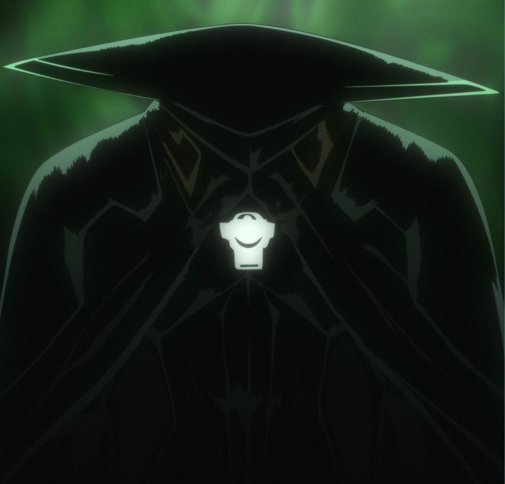
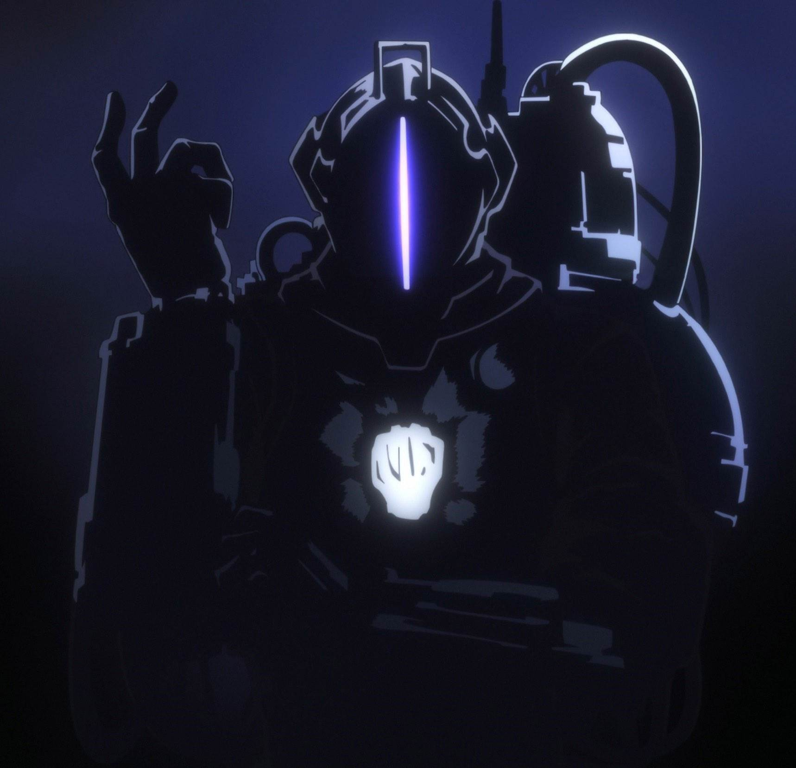
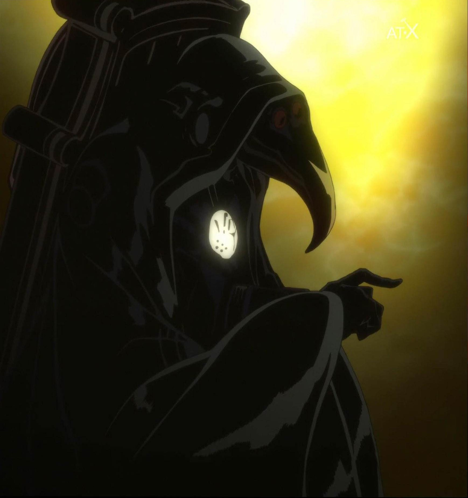
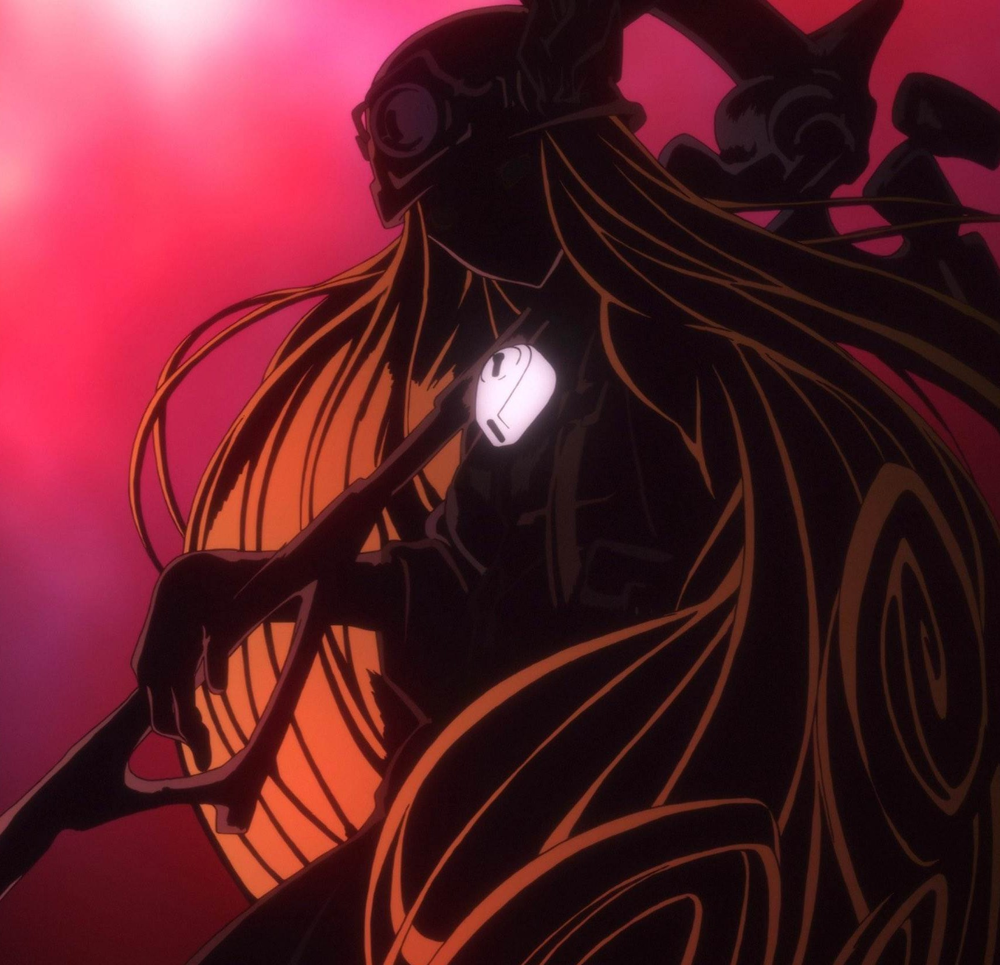

First white whistle to meet, delving between the second and third layers of the abyss.

Second white whistle to meet, personally don't recommend meet. delving between the fourth, fifth and perhaps touching the sixth layers of the abyss.

Third white whistle known to be somehwere in the sixth, hadn't been seen for quite a long time but no one dares thinking "KIA" because she's a white whistle who would bloody dare?

fourth white whistle, no life signs in the last few years, presumed dead, epithet is "the destroyer" or "the annihilator"